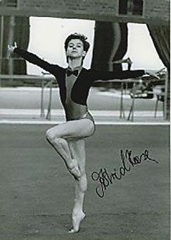

Astrid Heese (GDR)
1983 European Championships B
Silver Medalist
1986 Cottbus International AA Champion

Medal Total
European Championships:
1 Silver
World Championships: 2 Bronze
Astrid was born in September 21, 1968. She was a member of ASK Vorwarts Frankfurt/Oder in the beginning of her gymnastics career, and moved to SC Dynamo Berlin in 1984.
Competition Results
1979
GDR Children & Youth Spartakiade: 2nd AA, 1st V, 6th UB, 6th B
1982
Cottbus International: 2nd AA
GDR Championships: 7th AA, 7th UB, 8th V
Jr. Friendship Tournament (Druzhba): 3rd Team, 15th AA, 8th UB
SKDA Championships: 3rd Team, 2nd AA, 1st B, 2nd FX, 4th V, 6th UB
1983
Cottbus International: 8th AA
European Championships: 5th AA, 2nd B, 6th V, 6th FX
GDR Championships: 2nd AA, 4th V
GDR-HUN Dual Meet: 1st Team, 2nd AA
World Championships: 3rd Team
1984
CSSR Spartakiade (Olomouc): 2nd Team, 16th AA (prelims), 6th B
GDR Championships: 6th AA
1985
Dinamo Spartakiade: 1st AA
DTB Cup: 3rd AA, 1st UB, 2nd V, 5th B, 6th FX
GDR Championships: 6th B
1986
Catania Cup: 1st UB
Cottbus International: 1st AA, 1st UB, 1st FX, 2nd V
DTB Cup: 7th AA, 3rd UB, 3rd B
DTV Cup: 2nd AA
Gander Memorial: 5th AA
GDR Championships: 1st AA
Goodwill Games: 18th AA
Swiss Cup: 3rd Team
1987
Chunichi Cup: 10th AA, 8th UB, 8th FX
Cottbus International: 2nd FX, 3rd V
DTV Cup: 1st AA
European Championships: 10th AA, 5th UB
GDR Championships: 2nd AA
HUN-HOL-GDR Meet: 1st Team, 3rd AA
Tokyo Cup: 2nd B, 3rd V
World Championships: 3rd Team
1988
GDR Championships: 6th AA, 5th B, 6th UB
GDR Olympic Trials: 3rd AA
1989
DTB Cup: 6th AA, 6th UB, 6th FX
GDR Championships: 2nd B
SUI-GDR-GBR Meet: 1st Team, 4th AA
World Championships: 5th Team, 33rd AA
This page was created on September
12, 2004 and was last updated on August 14, 2022.
© Gymn Forum